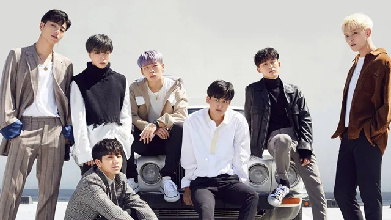

iKON
iKON is a South Korean boy band formed in 2015 by YG Entertainment. The lineup consists of six members: Jay, Song, Bobby, DK, Ju-ne, and Chan. Originally a seven-piece band, B.I departed from the group in June 2019.Initially introduced in the reality survival show WIN: Who is Next as "Team B", the group went on to appear in the 2014 reality survival show Mix & Match, which determined the final members of iKon.
History
2013–2014: Pre-debut and formation
In 2013, the six members participated as Team B on the Mnet reality survival show WIN: Who Is Next, competing against other trainees in Team A for the chance to debut as a group. The program involved three rounds of performances and public voting, with Team B eventually losing to Team A, who went on to debut as Winner.[5] During the program, Team B released two singles: "Just Another Boy" and "Climax". The members subsequently appeared as backup dancers in Taeyang's music video for "Ringa Linga".
In June 2014, Team B appeared in the reality survival program Mix & Match, a follow-up to WIN: Who Is Next to determine the final lineup of the boy group iKon. YG Entertainment CEO Yang Hyun-suk stated that the group's name was derived from the goal to become an "icon for Korea", hence the "K".[5] While Bobby, B.I, and Jinhwan were pre-confirmed members, the remaining members of Team B competed against three new trainees: Jung Jin-hyeong; Yang Hong-seok; and Jung Chan-woo, who had previously appeared on Korean television as a child actor.[7][8] It was reported that 150,000 fans applied to attend the final performance of the show, and before the announcement of iKon's official lineup, YG Entertainment's blog server crashed. Ultimately, Junhoe, Donghyuk and Yunhyeong successfully retained their places in the lineup, with Chan-woo added as the group's final member.
2015: Debut and Welcome Back
iKon debuted with the single "My Type", which was released with a music video on September 15, 2015. Within 24 hours, the music video surpassed 1.7 million views on YouTube.[citation needed] The group won their first music show trophy with the single on September 26, 2015 on MBC's Music Core,[13] even though they had yet to make their first official live appearance. On September 24, "My Type" achieved a "triple crown" on the Gaon chart, having won the number one spot on the digital, download, and streaming charts simultaneously in the 39th week of 2015. On September 18, the single reached number one on the music video chart of Chinese music streaming sites QQ Music and Youku. iKon also trended on Weibo, where they were reportedly searched 1.3 billion times.
2016: Japanese debut, Asian arena tours and new music
On January 13, 2016, the group made their Japanese debut with Japanese version of their album Welcome Back; the album sold 61,508 copies in its first week of release and placed third on the weekly Oricon Albums Chart,[22] earning them the New Artist Award and Best New Artist Award at the 58th Japan Record Award.[23] The original Korean version of the album sold over 100,000 copies in Japan by the end of 2016.
2017: Japan Dome tour and New Kids album series
On February 11, 2017, it was announced that iKon would embark on their first dome tour, with two shows set to take place in Kyocera Dome and Seibu Prince Dome and an expected attendance of 90,000 fans.[36] This made them the fastest group to hold a concert in a Japan dome since debuting.[37] On June 18, an additional 22 concerts in eight Japanese cities were announced by YGEX, with 233,000 fans expected to attend, making it the longest and the largest arena tour held by the band in Japan.
2018–2019: Completion of the New Kids series
iKon released their second studio album and the second entry of the group's four-part New Kids album series, Return, on January 25, 2018. The lead single "Love Scenario" was described as dance track with a circuitous melody and lyrics conveying a mellow yet upbeat reaction to a breakup. All 12 tracks of Return were co-written by members B.I and Bobby. Other artists including Psy, BigBang's Taeyang, and Epik High's Tablo also participated in songwriting alongside various YG Entertainment producers, including Choice37 and Teddy Park.[43] "Love Scenario" topped the Gaon Digital Chart for six weeks, making iKon the first artist to achieve this milestone. It also topped the year-end Gaon Digital Chart for 2018. The group was named the top artist of the first half of 2018 by Genie Music, having placed first on their daily music chart for 35 days
2020–2021: I Decide and Kingdom: Legendary War
iKon released their third EP, I Decide, on February 6, 2020, including the lead single "Dive". The EP, which was the group's first release since the departure of leader B.I in 2019, debuted at number three on the Gaon Album Chart.[49] On March 3, 2021, iKon returned with the new digital single "Why Why Why".[50] Beginning. in April 2021, iKon competed in the reality competition series Kingdom: Legendary War alongside five other K-pop boy groups.[51] In the show's finale, the group performed "At Ease" (열중쉬어), co-written and co-composed by labelmate Mino of Winner. "At Ease", along with the other participants' songs from the finale, was later included in a special EP titled Kingdom Finale: Who Is the King?
2022–present: Flashback, departure from YG Entertainment, and Take Off
iKon returned with their fourth EP, Flashback, on May 3, 2022, which included the lead single "But You".[52] In July, the group held the iKon Japan Tour 2022 in Kobe and Tokyo, selling out most of the shows.[53][54] On December 30, 2022, after seven years, the members of iKon departed from YG Entertainment following the completion of their contracts.